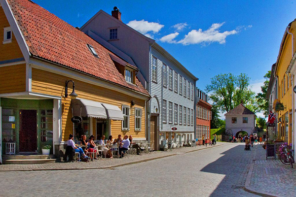
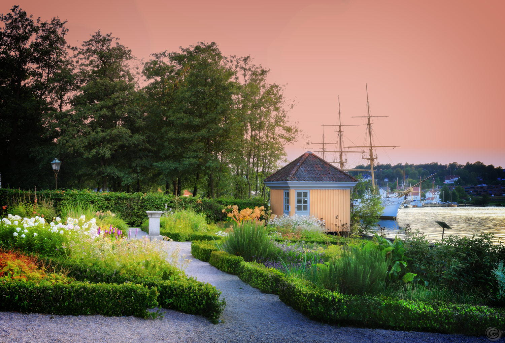

Gamlebyen
Gamlebyen i Fredrikstad er en av Norges mest populære attraksjoner, og er det stedet du virkelig MÅ besøke når du er i området. Gamlebyen er ikke bare godt bevart, den er også spill levende. Butikkene, galleriene og kafeene syder av liv, og gammel historie blir som ny når 1700-tallet møter nåtiden.
Kongsten fort

Kongsten Fort er blant Fredrikstads mange unike kulturminner. Fortet ble bygget i 1685 i tilknytning til festningsbyen og var en del av byens omfattende forsvarsanlegg.
Isegran
I dag er Isegran en levende kulturpark og et senter for formidling av tradisjoner, historie og opplevelser. Båter blir restaurert i de samme bygningene de engang ble bygget i, og Isegrans unike historie blir videreført i en grønn oase midt i skjæringspunktet mellom by og elv.